Play tropical instruments, drop balls in a gravity chamber, sing into it, record what you hear.
TROPICFLOW is a modular sound workstation that runs entirely in your browser. This guide walks through every panel - including the MIDI bridge (a MIDI keyboard or your computer keys), the CV cables and the SENSE module (a microphone or a keyboard-driven voice that transposes and triggers things) - then shows how to record a live take and export it losslessly (WAV) or compressed (OGG / Opus).
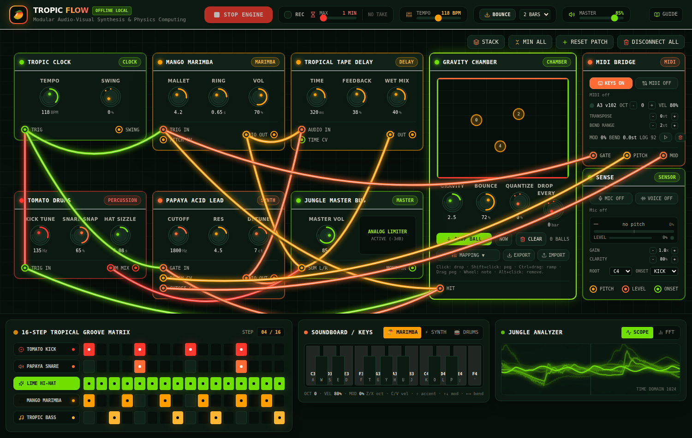
Getting started
npm install # everything the app needs (no devDependencies)
npm run build # type-check + production build -> dist/
npm start # serve dist/ at http://localhost:4173
npm run dev # or the Vite dev server with hot reload at http://localhost:5173Open http://localhost:4173 in a current Chrome, Edge, Firefox or Safari. Click anywhere once if the browser asks for a user gesture before playing audio.
http://localhost or any https:// address. If you open the app through a plain http://192.168.x.x network URL, REC is disabled and says so (see Troubleshooting). Everything else, including OGG export, still works there.Header & transport
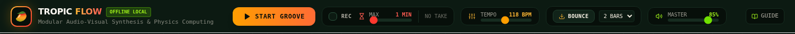
| Control | What it does |
|---|---|
| Start groove / Stop engine | Runs the clock. Every step is scheduled on the Web Audio timeline at its exact time, so there is no timer jitter. Stopping rewinds the sequencer and freezes the chamber. |
| REC + MAX | Tick REC to record what you hear while the groove runs; MAX (1–10 min) is the longest take. Details in Recording a take. |
| TEMPO | 60–180 BPM. Changes take effect on the next scheduled step; the chamber's physics are tempo-independent. |
| BOUNCE + bars | Renders the current patch offline (faster than realtime) and opens the export dialog; SCORE appears afterwards to download the note list. See Bounce & score. |
| MASTER | Output volume after the limiter. Recordings capture the signal after this slider ("what you hear"). |
Modular canvas & cables
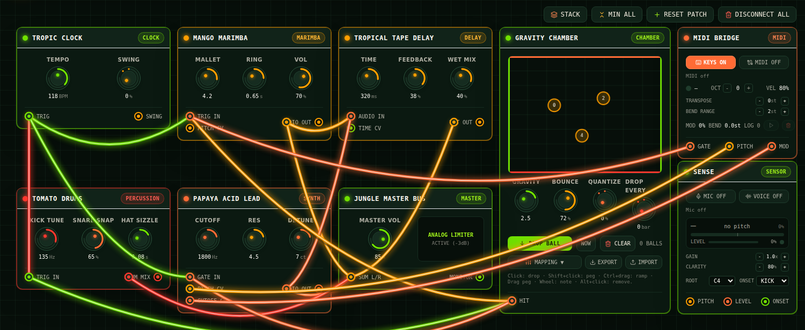
Drag a module by its title bar; click the title bar to minimise it to a single row (its jacks stay on the row and keep their cables), click again to maximise. Turn a knob by dragging up or down on it. Cables are functional: audio cables route signal, trigger cables decide which modules a source (the clock, the chamber, the MIDI bridge, the SENSE module) may fire, and CV cables modulate.
- Connect: drag from a jack to a compatible jack (output → input of the same family). Illegal pairs, e.g. a trigger into an audio input, are refused.
- Unplug: double-click a jack.
- STACK minimises every module and lays them out as stairs across the visible canvas (more columns when the window is short); MIN ALL / MAX ALL minimise or maximise everything in place.
- RESET PATCH restores the default routing and layout; DISCONNECT ALL clears every cable (silence!).
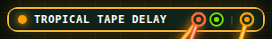
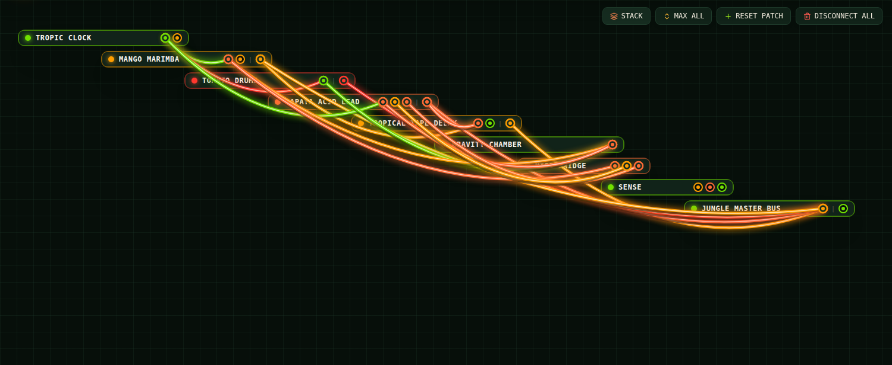
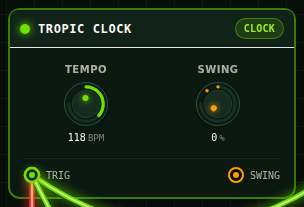
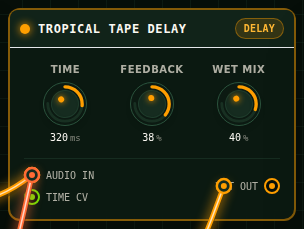
| Module | Voice | Knobs |
|---|---|---|
| Mango Marimba | FM acoustic model | Mallet hardness, ring time, volume |
| Tomato Drums | Analog kick / snare / hi-hat | Kick tune, snare snap, hat sizzle |
| Papaya Acid Lead | Dual oscillator + resonant filter | Cutoff, resonance, detune |
| Tropical Tape Delay | Tape echo with damped feedback | Time, feedback, wet mix |
| Jungle Master Bus | Limiter + analyser | Master volume (same as the header slider) |
| MIDI Bridge | MIDI keyboard / computer keys → GATE OUT, PITCH CV, MOD CV | Transpose, bend range, keys octave |
| SENSE | Microphone / virtual voice → PITCH CV, LEVEL CV, ONSET TRIG | Gain, clarity, root, onset drum |
Groove matrix
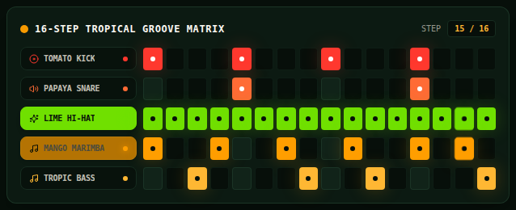
Sixteen 16th-note steps for Kick, Snare, Hi-hat, Marimba and Bass/Synth. Hi-hats on every third step of a beat open automatically; marimba and synth notes cycle through a scale. Swing (on the clock module) lengthens even steps and shortens odd ones. A track only sounds if its module's TRIG IN is cabled from the clock.
Soundboard & keys
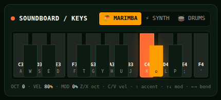
The computer keyboard is a MIDI device of the MIDI bridge. Play with the mouse or the keys: A W S E D F T G Y H U J K O L P ; ' are a chromatic octave and a half from C3 (the black keys on the row above). A key held is a note held: the synth sustains until you let go, the marimba and drums are one-shots.
| Keys | Effect |
|---|---|
| Z / X | Octave down / up (-2 .. +3); held notes keep their pitch |
| C / V | Velocity down / up in steps of 10 % |
| Shift + note | Accent (+25 % velocity) |
| ↑ / ↓ | Mod wheel (MOD CV) up / down in steps of 10 % |
| ← / → | Pitch bend down / up while held (PITCH CV), springs back on release |
| Space | A clap for the SENSE module's virtual voice |
The MARIMBA / SYNTH / DRUMS chips are the cables from the bridge's GATE OUT jack: click one to plug or unplug that instrument (the canvas shows the cable). With the drums plugged, the General MIDI drum keys play them: 36 kick, 38/40 snare, 42/44 closed hat, 46 open hat (on the keys: A with the octave at -1 is 36).
MIDI bridge
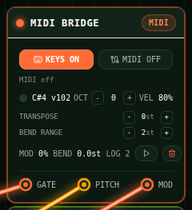
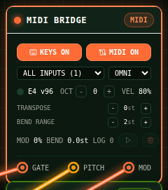
The bridge turns a physical MIDI keyboard (Web MIDI) or the computer keys into a trigger and control source on the canvas. GATE OUT fires whichever instruments it is cabled to; PITCH CV carries the pitch bend (times BEND RANGE, in semitones) and MOD CV the mod wheel - see CV cables. TRANSPOSE shifts every incoming note.
- KEYS: the computer keyboard plays the bridge. Off, the keys still drive the SENSE module's voice if that is on.
- MIDI: asks the browser for MIDI access (it may prompt once). Devices are listed as they are plugged in; choose one input or all, and a channel or omni. Needs a secure context:
http://localhostorhttps://, in Chrome, Edge or Firefox. - Constant latency: every note is timed from the moment the key or MIDI message arrived and scheduled a fixed few tens of milliseconds later (the audio path's own latency plus a margin), so what you play keeps its exact spacing instead of jittering with the browser.
- LOG: while the groove runs, everything the bridge receives (keys, MIDI, the SENSE module's events) is logged relative to the first step. ▷ replays the log in realtime, the bin clears it, and BOUNCE renders it - a bounce after a performance contains the performance.
tropicflowInput.send([0x90, 60, 100]) plays C4 as if a device had sent it; tropicflowInput.playScript(json) replays a saved log; tropicflowInput.midi.getStatus() tells you why MIDI is not available.CV cables
Orange-and-papaya CV jacks carry control values. Patch a source into a target and the target follows; several sources into one jack add up. The default patch wires the bridge's MOD CV into the synth's CUTOFF CV (the mod wheel or ↑/↓ opens the filter) and its PITCH CV into the synth's PITCH CV (the pitch wheel or ←/→ bends held notes and transposes new ones).
| Source | Value | Target | Effect |
|---|---|---|---|
| MIDI BRIDGE · PITCH CV | bend × BEND RANGE, semitones | PAPAYA ACID LEAD · PITCH CV | Held notes glide by it, new notes are transposed by it |
| MIDI BRIDGE · MOD CV | mod wheel, 0..1 | PAPAYA ACID LEAD · CUTOFF CV | Up to three octaves above the CUTOFF knob |
| SENSE · PITCH CV | sung pitch minus ROOT, semitones | MANGO MARIMBA · PITCH CV | Every strike (sequencer, chamber, keys) transposed |
| SENSE · LEVEL CV | level, 0..1 | TROPICAL TAPE DELAY · TIME CV | Delay time up to doubled |
| TROPIC CLOCK · SWING CV | swing, 0..1 | any CV input | A control follows the swing knob |
Any source can go into any CV input: a control (0..1) into a pitch jack spans one octave, a pitch (semitones) into the cutoff counts in octaves. Pitch CV is applied when a note starts, so the score of a bounce carries the frequencies that actually sounded.
SENSE: mic & voice
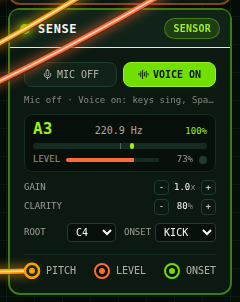
SENSE listens - to a microphone or to a virtual voice the computer keys sing through - and tracks the pitch, the level and the onsets (claps, hits) of what it hears. Three jacks make that usable in the patch:
- PITCH CV: the sung note measured against ROOT, in semitones. Patch it into the marimba's PITCH CV, sing D4 over a C4 root, and the whole marimba part plays two semitones up; sing the root and it is back.
- LEVEL CV: how loud the input is (0..1), e.g. into the delay's TIME CV.
- ONSET TRIG: a clap or a hit fires the instruments it is cabled to: the chosen drum (ONSET: KICK / SNARE / HAT), a marimba strike or a synth note at the root (patch PITCH CV too and they follow your voice).
MIC asks for the microphone (secure context, a permission prompt once; echo cancellation and noise suppression are turned off so the tracker hears the raw signal). VOICE needs nothing: the note keys sing (with a little vibrato and breath), Space claps. Both can be on at once. GAIN scales the input before analysis; CLARITY is how sure the pitch detector must be before a pitch counts (raise it in a noisy room, lower it for a breathy voice). The tuner shows the nearest note, the cents off it and the detector's confidence.
npm run render:wav -- --preset sensor-follow --sense voice.wav runs the same detectors over the file and renders with its pitch and claps.Jungle analyzer
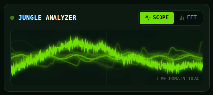
Gravity chamber
A deterministic 2-D physics box patched into the canvas. Balls fall under gravity and every collision triggers a note through the collision mapper. Which instruments it may play is decided by cables from its TRIG jack, exactly like the clock's TRIG OUT.
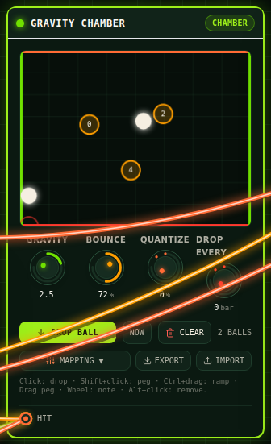
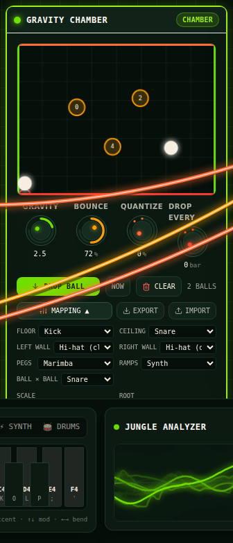
| Action | How |
|---|---|
| Drop a ball | DROP BALL, or click inside the box at the x position you want. NOW / ON BAR chooses whether a drop happens immediately or on the next bar start. |
| Add / remove a peg | Shift+click adds one; Alt+click removes it. Drag a peg to move it; the mouse wheel over a peg changes its note. |
| Draw a ramp | Ctrl+drag. Alt+click removes it. |
| Knobs | GRAVITY, BOUNCE (restitution), QUANTIZE (pulls hits toward the 16th grid, 0 = free physics), DROP EVERY (auto-drop every N bars). |
| Save / load | EXPORT / IMPORT the chamber as JSON. |
| CLEAR | Removes all balls (pegs and ramps stay). |
Collision times are solved analytically inside the 1 ms physics sub-step, so hits are timed to nanoseconds; the same simulation runs in the browser and in Node, which is how the test-suite verifies it.
Recording a take
Recording captures exactly what reaches your speakers — sequencer, chamber hits, keyboard notes, knob moves, delay tails — as 32-bit float stereo at the audio device's sample rate, sample-accurately, through an AudioWorklet tap after the master volume.
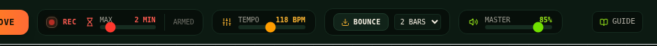
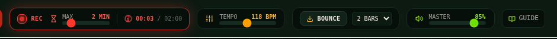
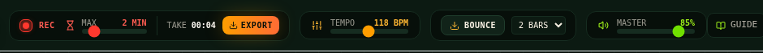
The rules
- Recording runs while the transport plays and REC is ticked. Tick REC, then START GROOVE — or tick it mid-groove to start right away.
- STOP ENGINE, unticking REC, or reaching MAX finalises the take. When MAX is reached the groove keeps playing; the header says max length reached.
- Keyboard notes played while the engine is stopped are not recorded.
- A new take replaces the previous one. Export a take you want to keep before recording again.
- MAX: 1–10 minutes, default 1. A minute of stereo audio is about 23 MB in memory, hence the ceiling.
t sits at t − start + 6 ms in the file — the 6 ms being the limiter's lookahead. The end-to-end tests verify this to under 1 ms mean error.Exporting WAV / OGG
Click EXPORT in the header (for a take) or BOUNCE (for an offline render). The dialog is the same.
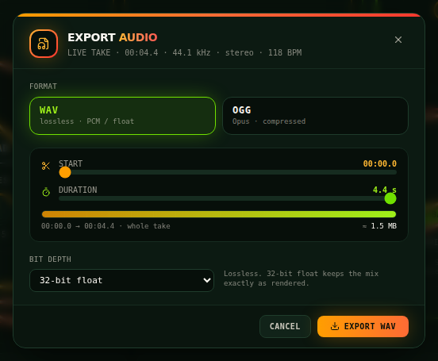
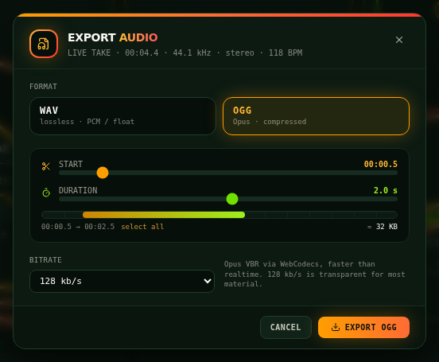
| Parameter | Values |
|---|---|
| Format | WAV lossless (16 / 24-bit PCM or 32-bit float) or OGG (Opus, variable bitrate) |
| Start / Duration | Sliders in 0.1 s steps. Clamped to the source; an end within 50 ms of the source end means "to the end". select all restores the whole take. |
| Bit depth (WAV) | 32-bit float keeps the mix exactly as rendered; 24-bit and 16-bit for compatibility. |
| Bitrate (OGG) | 64, 96, 128 (default), 160, 192, 256 kb/s. 128 is transparent for most material. |
| Edges | A 5 ms fade-in/out at the cut points so slices never click. |
| Size estimate | Shown next to the timeline, updated live. |
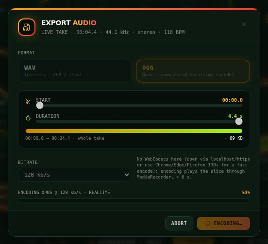
File names
Names encode the settings so exports never overwrite each other: tropicflow-take-118bpm-20250101-1432.wav, tropicflow-take-118bpm-20250101-1432-2.5s-8s-96k.ogg, tropicflow-118bpm-2bars-24bit.wav. A full-range 32-bit float bounce keeps the plain tropicflow-<bpm>bpm-<bars>bars.wav.
How OGG is made
Opus is encoded by the browser itself — WebCodecs AudioEncoder where available (Chrome, Edge, Firefox 130+, Safari 16.4+; faster than realtime) — and wrapped into an Ogg container by TROPICFLOW. The file decodes to exactly the requested duration (the final frame's padding is trimmed through the Ogg granule position) and carries ENCODER=tropicflow tags. No external service, library or network request is involved.
http://<ip> address), the dialog says realtime encode: the slice is played through MediaRecorder, so a 30 s slice takes about 31 s. The result is still exact: a sync burst is played ahead of the slice, located after decoding, and trimmed away with Ogg's pre-skip.Bounce & score
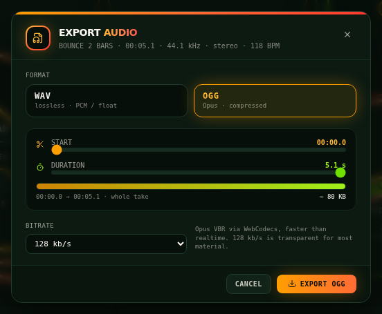
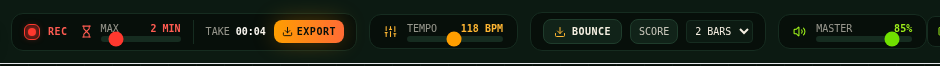
BOUNCE renders the current patch — sequencer and chamber from its current ball state — offline with the same engine, voices and clock, so two bounces of the same patch are equivalent to within floating-point noise. Unlike a take, a bounce contains nothing you played live; it is the deterministic version of the groove. Choose 1, 2, 4 or 8 bars next to the button.
The score lists every scheduled note (time, audible time, source, track, frequency, velocity, collision) and lets software verify the audio: npm run compare:wav -- groove.wav --score groove.score.json.
Troubleshooting
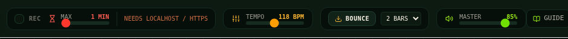
| Symptom | Cause | Fix |
|---|---|---|
| REC greyed out, NEEDS LOCALHOST / HTTPS | Insecure context: browsers hide AudioWorklet on http:// addresses other than localhost | Open http://localhost:4173 (or serve over https) |
| REC greyed out, NO AUDIOWORKLET | Very old browser | Update Chrome / Edge / Firefox / Safari |
| OGG says realtime encode | No WebCodecs in this browser / context | Works, just slower; Chrome, Edge, Firefox 130+ on localhost/https encode in a second |
| OGG greyed out | Neither WebCodecs nor a MediaRecorder Opus codec (e.g. older Safari) | Export WAV, or use another browser |
| No sound at all | Browser autoplay policy | Click START GROOVE (a user gesture); check MASTER and the master bus cable |
| Keys do not play | KEYS is off on the MIDI bridge, the focus is in a text field / menu, or GATE OUT is not cabled to an instrument | Turn KEYS on, click the canvas, plug a chip on the soundboard |
| MIDI greyed out | Insecure context or a browser without Web MIDI (Safari) | Open http://localhost:4173 or https; use Chrome, Edge or Firefox |
| MIDI permission refused / no MIDI service | The site permission was denied, or the system has no MIDI service (containers, some servers) | Allow MIDI for the site in the browser; on a normal desktop it just works. npm run check reports what the test browser sees |
| MIC greyed out / permission refused / no microphone found | Insecure context, denied permission, or no audio input | Same as MIDI; meanwhile VOICE needs no hardware at all |
| Tuner flickers or shows the wrong octave | Noisy or very breathy input | Raise CLARITY, sing closer, lower GAIN if the level meter sits at 100 % |
| Take shorter than expected | MAX reached, or REC was unticked | Raise MAX (up to 10 min) |
| Exported range clamped | Start + duration exceeded the take | The sliders show the real range; select all for everything |
Command-line tools
Everything the UI does can be reproduced and verified from the terminal (Node 22.18+, headless Chromium set up once with npm run setup).
# Render a preset to WAV + score; --ogg also writes an Opus file via the browser's encoder
npm run render:wav -- --preset default-groove --bars 2 --out out/groove.wav
npm run render:wav -- --preset chamber-only --ogg 128 --out out/chamber.wav # + out/chamber.ogg
# Replay a performance (the MIDI bridge's log JSON or a bounce score file) - GATE OUT cables decide who plays
npm run render:wav -- --preset default-groove --input performance.json --transpose 12 --out out/take.wav
# Analyse a recording with the SENSE detectors and render with its pitch (PITCH CV) and claps (ONSET TRIG)
npm run render:wav -- --preset sensor-follow --sense voice.wav --out out/sense.wav
# Validate an Ogg Opus file (CRCs, headers, granules, duration) - no ffmpeg needed
npm run inspect:ogg -- out/chamber.ogg
npm run inspect:ogg -- my-export.ogg --expect-seconds 8 --json
# Compare two WAVs, or a WAV against its score
npm run compare:wav -- out/groove.wav tests/golden/default-groove-1bar.wav
npm run compare:wav -- out/groove.wav --score out/groove.score.json
# Regenerate the screenshots in this guide
npm run docs:shots
# Tests: unit (pure Node, milliseconds) and end-to-end (real Web Audio in Chromium)
npm testShortcuts
| Where | Gesture | Effect |
|---|---|---|
| Anywhere | A…' | Play (and hold) notes through the MIDI bridge; black keys W E T Y U O P |
| Anywhere | Z / X, C / V, Shift | Octave, velocity, accent |
| Anywhere | ↑ ↓ ← → | Mod wheel, pitch bend |
| Anywhere | Space | Clap (SENSE virtual voice) |
| Canvas | Click module title | Minimise / maximise |
| Canvas | Drag module title | Move |
| Canvas | Drag jack → jack | Connect a cable |
| Canvas | Double-click jack | Unplug |
| Knob | Drag up / down | Change value |
| Chamber | Click | Drop a ball at x |
| Chamber | Shift+click / Alt+click | Add / remove a peg or ramp |
| Chamber | Ctrl+drag | Draw a ramp |
| Chamber | Wheel over a peg | Change its note |
| Export dialog | Esc | Close (not while encoding — use ABORT) |